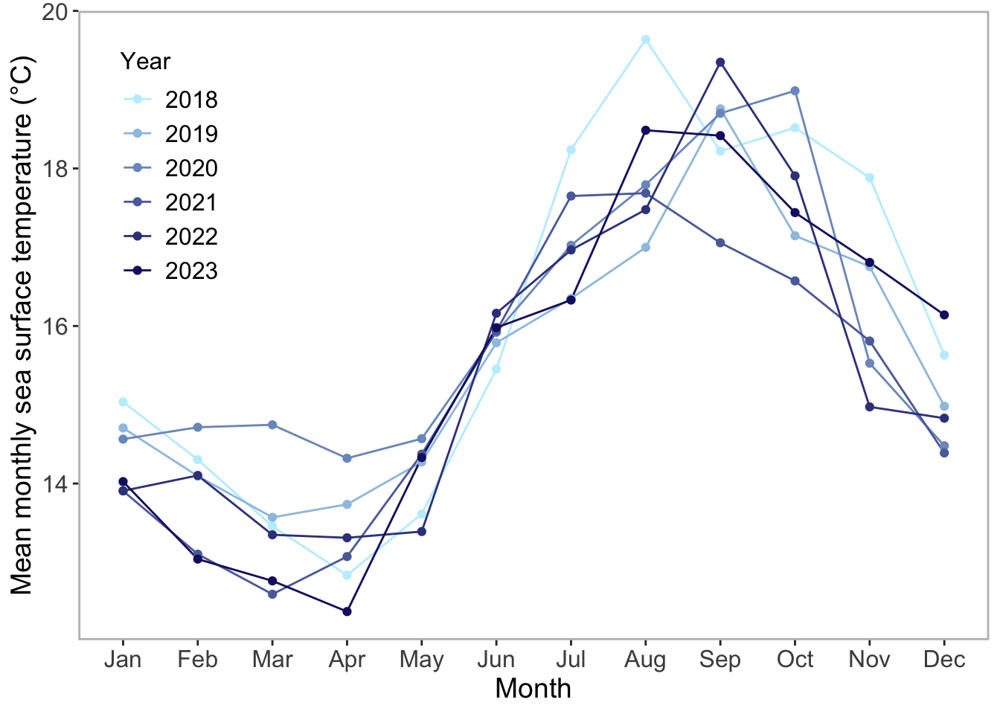
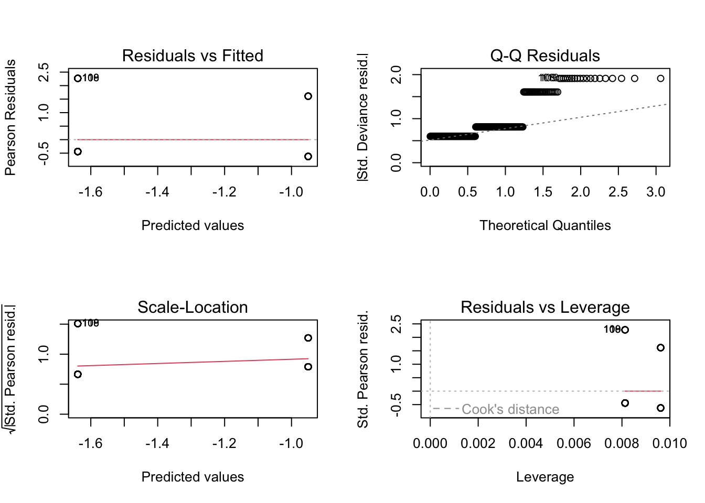
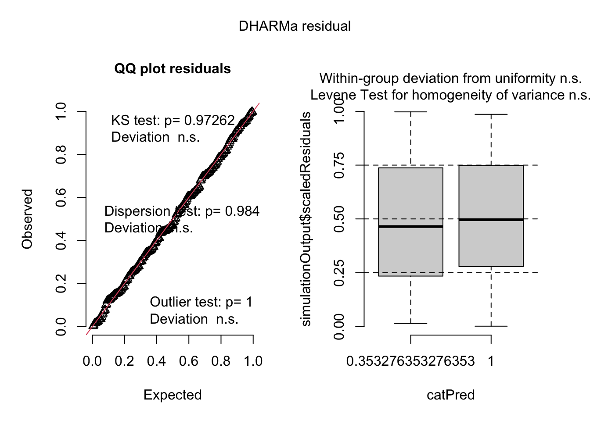

sst <- read.csv("~/github/ENVS-193DS_spring-2025_final/data/SST_update2023.csv")
nest_boxes <- read.csv("~/github/ENVS-193DS_spring-2025_final/data/occdist.csv")
library(tidyverse)
library(janitor)
library(dplyr)
library(ggplot2)
library(grDevices)
library(utils)
library(DHARMa)
library(MuMIn)
library(nnet)ENVS 193DS Final
repository: https://github.com/annacote2026/ENVS-193DS_spring-2025_final
Problem 1. Research Writing
a.
In part 1 they used a Person’s r correlation to determine the strength of the relationship between distance from headwater (km) and annual total nitrogen load (kg/year), assuming that these variables exhibit a linear relationship. In part 2 they used a one-way ANOVA test, which helps determine if there is a statistically significant difference between the group means, which in this case is the average nitrogen load (kg/year) between sources (urban land, atmospheric deposition, fertilizer, wastewater treatment, and grasslands).
b.
First, I think that my co-worker should provide the F-statistic, which is the test-statistic for an ANOVA, and would give context for the reasoning behind rejecting the null hypothesis, since it compares the between group variance (signal) to the within group variance (noise). In this situation, the F-statistic would be a numerical representation of the difference in average nitrogen load (kg/year) between sources, which would support their rejection of the null hypothesis if it is large. Another detail that should be included is the effect size for the ANOVA (\(/eta^2\)), which tells you how much the grouping variable explains the response variable. In this case, the effect size’s value would communicate how “large” the difference between sources in average nitrogen load (kg/year) is.
c.
There is a (weak/moderate/strong) (+/-) relationship between the distance from headwater (km) and annual total nitrogen load (kg/year) (Pearson’s r (df)= correlation coefficient, p = 0.03, \(/alpha\) = significance level).
Additionally, we found a large (\(/eta^2\) = effect size) difference between sources in average nitrogen load (kg/year) (one-way ANOVA, F(numerator degrees of freedom, denominator degrees of freedom) = F-statistic, p = 0.02, \(/alpha\) = significance level).
Problem 2. Data visualization
a.
sst_clean <- sst |> # start with the sst dataset
clean_names() |>
mutate( # create and modify columns
date = ymd(date), # make sure date is not a string
month = factor( # make sure month is a factor
month(date, label = TRUE, abbr = TRUE),
levels = month.abb, # abbreviate months
ordered = TRUE # make month an ordered factor
),
year = factor( # extract year as a factor
year(date), # get the year from the 'date'
levels = 2018:2023 # years 2018-2023 only
)
) |>
filter(year %in% c("2018", "2019", "2020", "2021", "2022", "2023")) |> # filter out all years except these
select(month, year, temp) |> # select columns of interest
rename(mean_monthly_sst = temp) |> # rename temp to be mean_monthly_sst
group_by (year, month) |> # group by year and month
summarise(mean_monthly_sst = mean(mean_monthly_sst, na.rm = TRUE), .groups = "drop") |> # calculate mean SST for each month-year group
as_tibble() # making sure it is in the tibble format
slice_sample(sst_clean, n = 5) # showing 5 random rows from the cleaned data set# A tibble: 5 × 3
year month mean_monthly_sst
<fct> <ord> <dbl>
1 2022 May 13.4
2 2020 Sep 18.7
3 2021 Jan 13.9
4 2022 Aug 17.5
5 2022 Jul 17.0str(sst_clean) # showing the structure of the data settibble [72 × 3] (S3: tbl_df/tbl/data.frame)
$ year : Factor w/ 6 levels "2018","2019",..: 1 1 1 1 1 1 1 1 1 1 ...
$ month : Ord.factor w/ 12 levels "Jan"<"Feb"<"Mar"<..: 1 2 3 4 5 6 7 8 9 10 ...
$ mean_monthly_sst: num [1:72] 15 14.3 13.5 12.8 13.6 ...b.
blue_shades <- colorRampPalette(c("lightblue1", "midnightblue"))(6) # defining a custom color palette with 6 shades of blue
# base layer: ggplot
ggplot(data = sst_clean,
aes(x = month, # x-axis
y = mean_monthly_sst, # y-axis
color = year, # color lines by year
group = year)) + # group by year
# first layer: line graph
geom_line() +
labs(x = "Month", # label x-axis
y = "Mean monthly sea surface temperature (°C)", # label y-axis
color = "Year") + # color by year
# second layer: points
geom_point() +
scale_color_manual( # choose manual color scale
values = blue_shades, # blue shades
name = "Year"
) +
theme(legend.position = c(0.1, 0.75), # move legend
panel.grid = element_blank(), # removing panel grid
panel.border = element_rect(color = "gray", fill = NA, linewidth = 1), # make panel border gray
legend.title = element_text(size = 12),
# change legend title text size
legend.text = element_text(size = 12),
# change legend text size
axis.title = element_text(size = 14),
# change axis title text size
axis.text = element_text(size = 12),
# change axis text size
panel.background = element_rect(fill = "white"), # coloring panel background white
plot.background = element_rect(color = "white")) # coloring plot background white)
Problem 3. Data analysis
a.
In this study, the 1s and 0s are distinguishing the different inhabitants of the nest boxes. The options are Swift parrot, Tree martin, Common starling, and empty, and each is denoted with a 1 in its respective column on the data sheet.
b.
The Swift Parrots are very selective about where they nest, and have been observed to not return to a nesting site after using it once, unlike the Common Starlings and Tree Martins, who are quite adaptive and abundant in the area. Since this study is determining the effectiveness of deploying permanent nest boxes to restore the critically endangered Swift Parrot population, it is important to understand that Tree Martins are subordinate nest competitors to both Common Starlings and Swift Parrots, and that the competitive interaction between Swift Parrots and Common Starlings is not well understood aside from some anecdotal observations.
c.
The two years that are compared are defined by the mast tree flowering event that occurred in the breeding habitat, triggering Swift Parrot nesting. The difference between the two breeding seasons is that the first year (2016) acted as a general trial run of the nest boxes, but since they were left in the same spots after their initial deployment, the second year (2019) acted more as a test for the efficacy of the permanent deployment option, because they had already been nested in by the parrots during the first year.
d.
4 models total:
| Model Number | Season | Distance to Forest Edge | Model Description | |
|---|---|---|---|---|
| 0 | no predictors (null model) | |||
| 1 | X | X | all predictors (saturated model) | |
| 2 | X | Season | ||
| 3 | X | Distance to Forest Edge |
e.
f.
par(mfrow = c(2,2))
plot(model1)
plot(model2)
plot(model3) # residuals look ok for best model
g.
AICc(model1,
model2,
model3, # best model: water and species
model0) |>
# arranging output in descending order of AIC
arrange(AICc) df AICc
model1 3 226.3133
model3 2 229.6716
model2 2 236.3744
model0 1 238.8318Problem 4. Affective and exploratory visualizations
a.
One of the differences between the exploratory visualizations I made in Homework 2 and the affective visualization I made in Homework 3 are that the axes represent different variables. During the creation of my exploratory visualizations I was trying to determine what the most effective way to visualize my data would be, so I experimented with the variables on the axes, and when I created the affective visualization I ended up designing it completely different, with the axes instead being date versus time. Another difference between the visualizations is that the affective one shows each individual data point, whereas the exploratory visualizations show grouped variables.
A similarity between all of the visualizations is that they all utilize axes to display the data, and another is that each one encorporates a categorical data component, whether it is “mood” or “genre” for the exploratory visualizations or all of the above for the affective visualization.
In general, the amount that I listened to specific genres as well as the count of each mood are fairly even across the board, which you can see in my affective visualization and in my exploratory visualizations. That being said, it is difficult to pick up on any concrete patterns in my exploratory visualizations because I made them before I had a substantial amount of data recorded. Additionally, I think that the way I chose to depict the affective visualization made it challenging to see patterns in my data without counting the occurrences of categorical variables individually.
The main feedback I received during week 9 in workshop was that it was difficult to tell what time and date corresponded to each individual data point, and one of my peers suggested changing the format to a calendar. I ended up implementing this suggestion, and labeled each day on the calendar with the date, as well as the time for each data point. I think that in the end, this made the graphic easier to interpret overall.
b.
Shared during class!